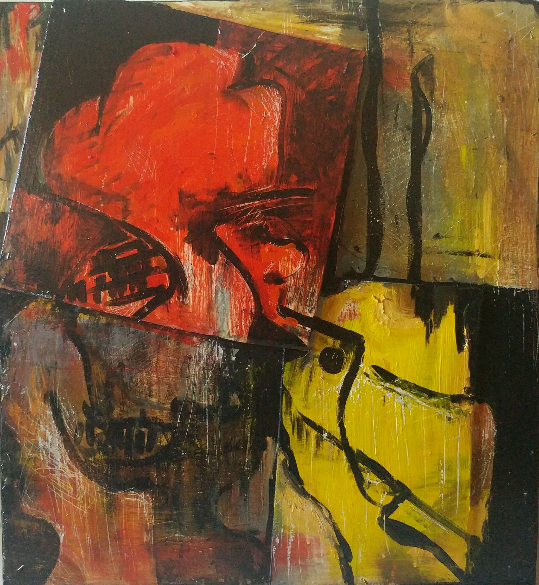

Currículum Vitae
Aquí va tu información del CV...
BIO
Mi trabajo parte de acontecimientos que dejan una marca persistente en la vida de una persona. Me interesan aquellas experiencias que alteran la manera en que alguien se percibe a sí mismo y habita el mundo, incluso cuando han dejado de ser visibles o de poder explicarse con claridad. Cada obra surge de una historia concreta, propia o ajena, que funciona como punto de partida para una construcción visual donde la imagen no busca ilustrar un relato, sino aproximarse a aquello que permanece después de él. Trabajo desde la idea de que toda persona carga con episodios, pérdidas, afectos, fracturas y transformaciones que terminan formando parte de su manera de estar en el mundo. A través de la pintura, el dibujo, el collage, la fotografía y el ensamblaje, me interesa traducir experiencias difíciles de contener en el lenguaje verbal. La composición, la materia y los elementos simbólicos actúan como estructuras capaces de sostener aquello que con frecuencia permanece oculto, desplazado o incompleto. Mi práctica oscila entre lo figurativo y lo abstracto, permitiendo que la imagen conserve zonas de ambigüedad y resistencia. No busco reconstruir fielmente una historia determinada, sino generar un espacio donde la experiencia pueda adquirir una nueva forma y permanecer abierta a múltiples lecturas. Entiendo la obra como un territorio de traducción: un lugar donde aquello que ha marcado una vida puede transformarse en imagen sin perder del todo su complejidad, sus silencios ni sus contradicciones.